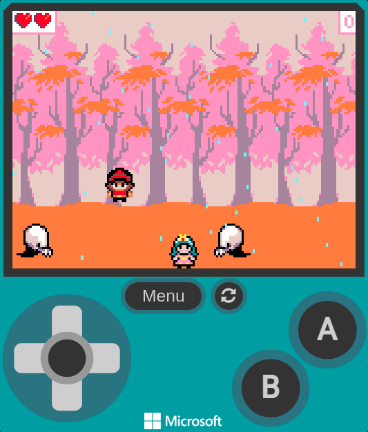
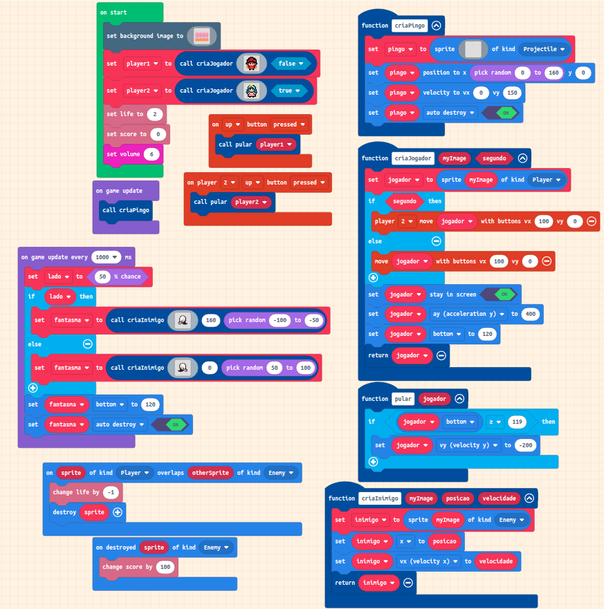

Ataque dos Fantasmas
Em uma floresta chuvosa, nossos heróis se encontram perdidos e sem uma forma de se defenderem quando percebem que uma horda enorme de fantasmas os cercaram e a única opção que têm é desviar deles pelo máximo de tempo que conseguirem. Ataque dos fantasmas é um jogo desenvolvido durante as aulas da oficina de javascript em 2021 no CEMEB e tem como objetivo, sobreviver pelo máximo de tempo possível enquanto desvia dos fantasmas que surgem de ambos os lados. A cada fantasma que passa, o jogador ganha uma pontuação e, quando capturado por um fantasma, será exibida a pontuação máxima que já foi feita no jogo, assim como a pontuação obtida na partida. O jogo pode ser jogado por até 2 pessoas e acaba sempre que ambos os jogadores são capturados.
Para jogar agora, pode-se utilizar este link ou o link existente na barra de navegação do site. Você consegue obter uma nova pontuação máxima? 😆
Controles
Para a movimentação do jogador 1, podemos utilizar as setas do arcade mostrado na tela para movimentar para os lados e para pular. Já para o jogador 2, apenas por meio do teclado é possível a movimentação. O jogador 1 também pode ser movimentado por meio do teclado. O mapeamento das teclas para cada um dos jogadores é feito conforme a tabela abaixo:
Tabela de Controles
| Descrição | Tecla |
|---|---|
| Movimentar Jogador 1 para a esquerda | ← ou A |
| Movimentar Jogador 1 para a direita | → ou D |
| Jogador 1 pula | ↑ ou W |
| Movimentar Jogador 2 para a esquerda | J |
| Movimentar Jogador 2 para a direita | L |
| Jogador 2 pula | I |
Aspectos Técnicos
O Jogo foi desenvolvido usando a plataforma Microsoft Makecode Arcade, onde é possível criar jogos utilizando uma ferramenta de programação em blocos, javascript, ou python. O código modificável para o projeto em si pode ser obtido aqui: Link.
Durante o desenvolvimento do jogo, todo o conhecimento adquirido durante o curso foi usado, incluindo desde os mais básicos até os mais avançados como variáveis, operações, condicionais, decisão, loops e funções. Na imagem ao lado, podemos ver que existem 4 funções, que são de criar um pingo da chuva que tem no jogo, criar um jogador, criar um inimigo e a função que faz um jogador pular.
Durante a criação dos inimigos, uma velocidade aleatória é atribuída a ele e o lado que o inimigo vem também é definido aleatoriamente. Desta forma, o jogo não fica sempre a mesma coisa e depende um pouco da "sorte".
Valores
- Os jogadores se movem com velocidade 100
- Os inimigos se movem com velocidade que varia aleatoriamente entre 50 e 100
- Um inimigo é gerado a cada 1 segundo
- A cada vez que um inimigo sai da tela, ele é auto-destruído e os jogadores ganham 100 pontos